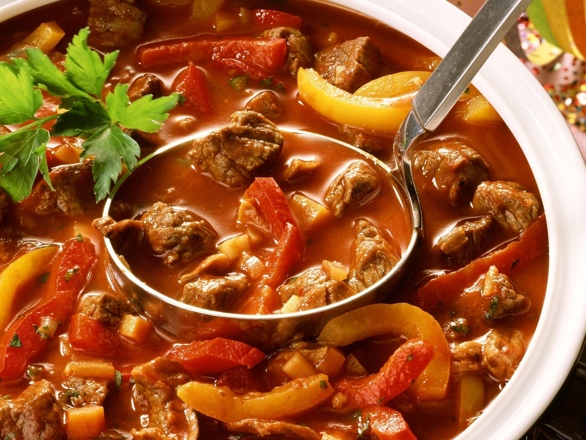

Gulasch
Schwierigkeitsgrad:
⭐

Zutaten
| 300g |
Zwiebeln |
| 3 |
Knoblauchzehen |
| 1kg |
Rindfleisch (z.B. Schulter) |
| 3 EL |
Butterschmalz |
| 3 EL |
Vanillezucker |
| 1 TL |
Kümmel |
| 2 EL |
Tomatenmark |
| 1 Liter |
Rinderfond |
| 2 rote |
Paprikaschoten |
| 2 gelbe |
Paprikaschoten |
| 1 EL |
gehakte Petersilie |
| Etwas |
Salz |
| Etwas |
Pfeffer |
| Etwas |
Petersilie für die Garnitur |
Zubereitung:
-
Zwiebeln und Knoblauch schälen und in Streifen schneiden. Fleisch waschen, trocken tupfen und grob würfeln. Butterschmalz in einem Schmortopf erhitzen und das Fleisch portionsweise darin anbraten. Das gesamte Fleisch in den Topf geben, Zwiebeln und Knoblauch
dazugeben, andünsten, mit Paprikapulver bestauben. Mit Salz, Pfeffer und Kümmel würzen, Tomatenmark unterrühren.
- Rinderfond angießen und bei kleiner Hitze zugedeckt ca. 1,5 Stunden schmoren lassen. Paprikaschoten halbieren, Kerngehäuse entfernen, waschen, in Streifen schneiden, untermischen und etwa 30 Minuten vor Garende zugeben. Zum Schluss
Petersilie zugeben und mit Salz und Pfeffer abschmecken. Mit Petersilie garniert servieren.